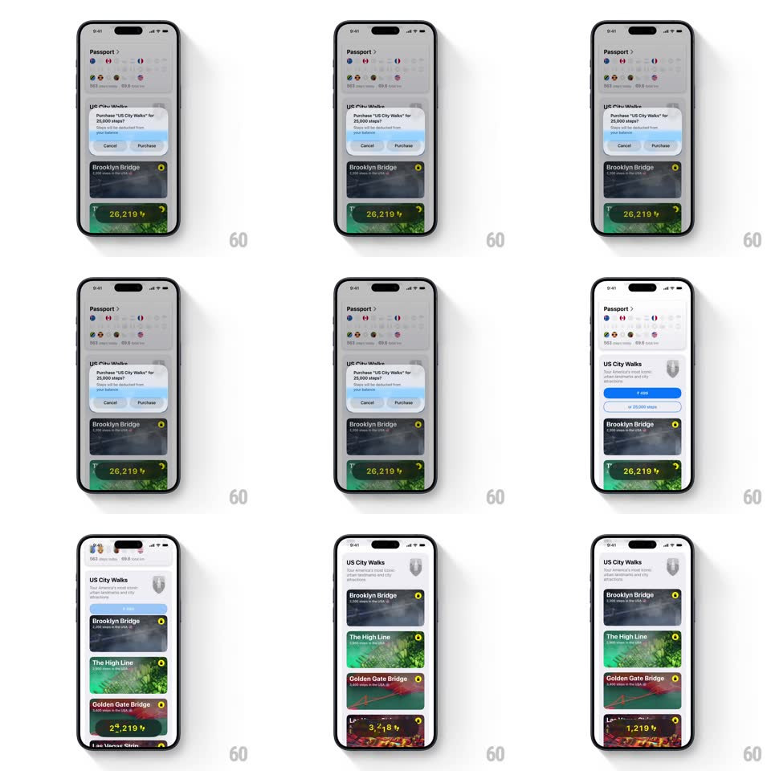

Media
Frame-by-frame

Rebuild this interaction 1:1: Walk the World's step purchase - confirming 'Purchase "US City Walks" for 25,000 steps?' rolls the balance pill down from 26,219 to 1,219 digit by digit while the unlocked walk cards slide up into the collection.

Rebuild this interaction 1:1: Walk the World's step purchase - confirming 'Purchase "US City Walks" for 25,000 steps?' rolls the balance pill down from 26,219 to 1,219 digit by digit while the unlocked walk cards slide up into the collection.
## Integration
Integration: stack-agnostic spec - springs given as stiffness/damping, timed motions as duration + curve; map every value to your framework and animation library of choice.
## Scene
Passport screen: country flags and stats, a "US City Walks" card with unlock options ("₹499" blue button, "or 25,000 steps" outline), a locked Brooklyn Bridge card, and a green bottom pill showing the balance "26,219" with a bolt. A center confirmation sheet offers Cancel / Purchase. After purchase the collection shows unlocked cards: Brooklyn Bridge, The High Line, Golden Gate Bridge.
## Motion spec
Pattern: ticker deduction with card cascade, ~1.2s.
- Confirm: the sheet scales in (0.9 -> 1, spring ~360/20, 250ms) over a 40% scrim.
- Purchase: the sheet dismisses down (200ms) and the balance pill's digits roll down like an odometer - each digit spins through its intermediate values, right to left, landing at 1,219 (700ms total).
- Unlock: the "US City Walks" header flips to owned (lock badge fades, 200ms) and the walk cards slide up staggered (60ms apart, 300ms each, ease-out) revealing their artwork.
- Haptic: success pulse when the ticker lands.
## Calibration
- The deduction is exactly the price: 26,219 - 25,000 = 1,219.
- The pill stays pinned at the bottom; only its digits move.
## Reduced motion
The balance crossfades to the new value (300ms); cards fade in staggered.
## Don't miss
- The odometer roll is per digit, not a whole-number count-up - neighboring digits turn at different speeds.
- Cards that were locked show their artwork only after the cascade.